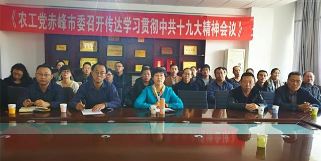
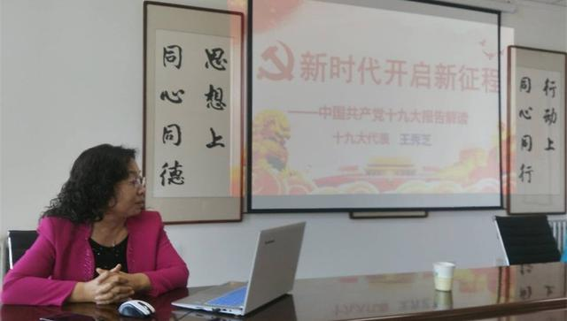

11月4日下午，农工党赤峰市委召开传达学习贯彻中共十九大精神会议，农工党赤峰市委主委、赤峰市政府副市长李艳茹主持会议，农工党赤峰市委委员、总支及各支部委员参加会议。

会议邀请党的十九大代表王秀芝同志做了题为《新时代开启新征程》的报告。王秀芝结合本职工作，以党的十九大代表的亲身经历，就大会的主题、十个历史性成就、两个重大判断、一个历史使命与四个伟大、一个重大思想及其意义、新时代中国色社会主义的基本方略、两个重要时期、两个阶段、九个方面任务部署和政策指导、大会盛况等内容，进行了详细全面、深入浅出、通俗易懂的解读。与会人员一致表示，通过学习，充分认识中共十九大深远的历史意义，深刻领会中共十九大会议精神实质和丰富内涵，深受教育、深受启发、深受鼓舞、深受鞭策，进一步坚定了在中国共产党领导下，“牢记使命、不忘记合作初心、继续携手前进、在民主政治建设的道路上昂首阔步”的信心和“牢记嘱托、建设亮丽内蒙古、共圆伟大中国梦、在赤峰跨越发展征程中再立新功”的决心。
李艳茹在总结讲话时强调，农工党赤峰市委要把学习十九大报告作为当前和今后一个时期的重要政治任务，组织引领全体党员迅速掀起学习宣传贯彻热潮。一是全面准确学习中共十九大精神，要原原本本学、原汁原味学、带着问题学、联系实际学。二是紧密围绕中共十九大确定的目标任务，认真履职尽责，特别是借助农工党在医药卫生、人口资源、生态环境等领域的联系界别优势发挥作用。三是以执政党为师，不断加强自身建设，提高履职能力，做好参政议政工作，努力把自己培养成适应新时代要求的农工党党员。